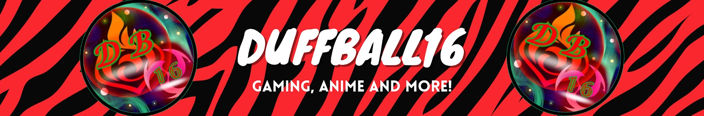

Duffball16 // Content
Watch the chaos.
From live community hangouts to edited playthroughs and quick clips, catch the newest Duffball16 moments right here. Pick your next watch, and join the Duffinians for the journey.
01 // The channel, updated
Fresh from Duffball16.
There’s always another story in a game, an unexpected moment live, or a quick clip worth sharing. Browse what’s on the channel without hunting through separate tabs.
01 // Live together
Livestreams.
Game nights, spontaneous side quests and the Duffinians in chat. Catch the newest public livestreams and replays.
02 // The longer journey
Gaming videos.
Edited playthroughs, memorable moments and games with enough room for the story to unfold.

03 // One quick laugh
Short clips.
Fast gaming highlights, reactions, memes and moments that get straight to the point.

Short clips are identified from public video durations (up to three minutes). YouTube doesn't give public API clients a fully reliable Shorts-only label, so some short regular uploads may also appear here.
04 // Choose your adventure
Playlists & series.
Follow a whole series instead of finding episodes one by one. These collections are read from Duffball16's public YouTube playlists and refreshed automatically.
Minecraft & SMP
Worlds, survival, building and adventures with friends.
Hollow Knight & Silksong
Metroidvania journeys, bosses and discoveries, when there are playlists for them.
More series & collections
Everything else Duffball16 has organised into watchable playlists.
Only public playlists appear here. The grouping uses playlist titles, and new series will be picked up on the next refresh. This is not a confirmed weekly streaming timetable.
05 // Stay connected
Never know what's next.
New game series, streams, Shorts and community moments can all become part of the channel. Follow the main platforms to stay close to whatever Duffball16 is making next.